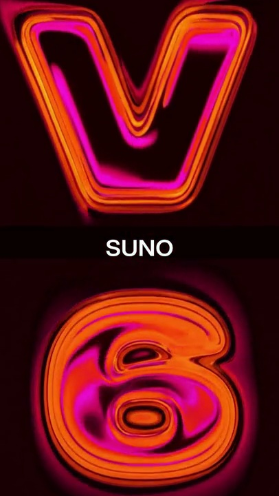
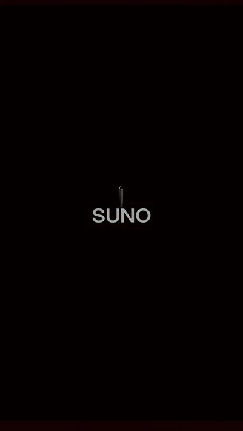
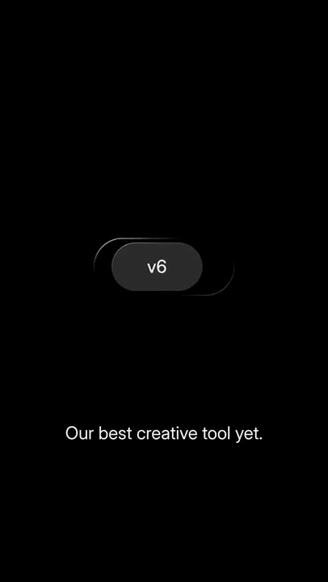
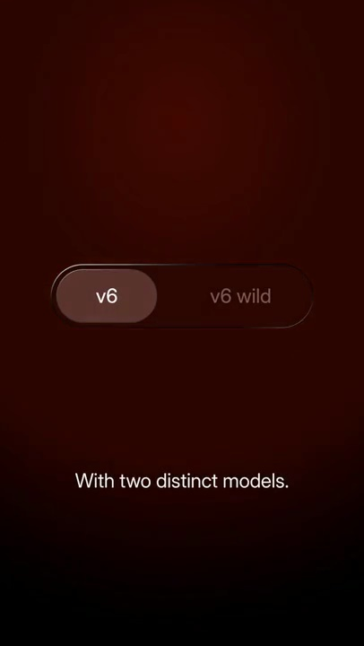

Suno / V340
SUNO 版本开关
V 在上，6 在下，橙色边缘与粉色内部形成多层光泽。中间品牌名保持小而稳定，版本字向上下离开后才露出控件。
构图与编排 可播放 · 可替换内容
整体编排规则示例
查看 HTML 源码
<!doctype html><html lang="zh-CN"><meta charset="utf-8"><meta name="viewport" content="width=device-width,initial-scale=1"><title>SUNO 版本开关 · sequence</title><style>html,body{margin:0;width:100%;height:100%;overflow:hidden;background:#160100}canvas{display:block;width:100%;height:100%;object-fit:contain}</style><body data-mode="sequence"><canvas width="1000" height="600"></canvas><script src="data.js"></script><script src="common.js"></script><script src="scene.js"></script><script src="bridge.js"></script></body></html>画面元素巨大 V 与 6中心品牌名版本胶囊双选项切换器
MOTION LANGUAGE
动作与构图
局部动作 · 构图规则
01
先用大版本字占满视野
先用大版本字占满视野规则示例
查看 HTML 源码
<!doctype html><html lang="zh-CN"><meta charset="utf-8"><meta name="viewport" content="width=device-width,initial-scale=1"><title>SUNO 版本开关 · sequence</title><style>html,body{margin:0;width:100%;height:100%;overflow:hidden;background:#160100}canvas{display:block;width:100%;height:100%;object-fit:contain}</style><body data-mode="clip" data-start="0" data-end="2.3"><canvas width="1000" height="600"></canvas><script src="data.js"></script><script src="common.js"></script><script src="scene.js"></script><script src="bridge.js"></script></body></html>V 在上，6 在下，橙色边缘与粉色内部形成多层光泽。中间品牌名保持小而稳定，版本字向上下离开后才露出控件。
02
把发布口号收成实际选择
小胶囊先显示一个版本，再横向伸长露出第二个选项。浅色选中块留在左侧，背景从黑转为暗红，底部补一句两种模式说明。
SEQUENCE
段落与节奏
点击段落，定位到上方编排示意。




画面参考 · 离散静帧
KEEP THE RELATIONSHIPS
制作其他主题
- 替换版本和模式名，保留从巨大宣传字到小型真实控件的尺度反差。
制作约束
巨大 V 与 6 / 中心品牌名 / 版本胶囊 / 双选项切换器
- V 在上，6 在下，橙色边缘与粉色内部形成多层光泽。中间品牌名保持小而稳定，版本字向上下离开后才露出控件。
- 小胶囊先显示一个版本，再横向伸长露出第二个选项。浅色选中块留在左侧，背景从黑转为暗红，底部补一句两种模式说明。